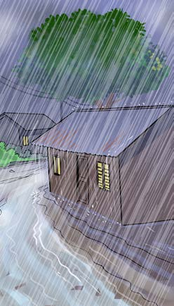
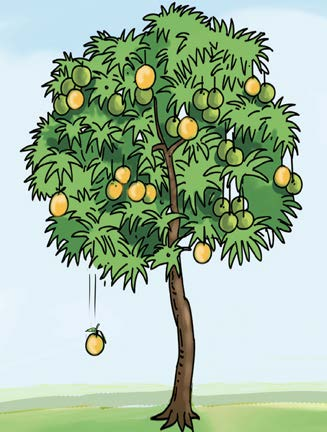

Activity
Study Figure 1, then answer the questions that follow.
(a)

(b)

(c)
Figure 1: Various phenomena
Questions
1. What information is presented in Figure 1? Explain.
2. Mention three (3) other phenomena you have experienced but you have no explanations as to why they happened.